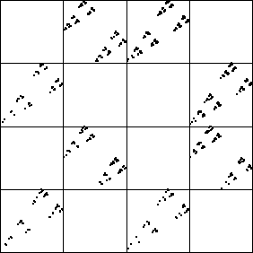

| Now suppose we drive the IFS randomly, except that none of the
s = 4 logistic map forbidden combinations is allowed.
We get the picture on the left. |
|  |
 |
|
|
| The left picture looks very much like the right picture, the IFS driven by the
s = 4 logistic map, with
equal-size bins. |
| Even though this logistic map is chaotic, it is very simple, at least
in terms of the driven IFS. |
| Imposing eight forbidden
combinations completely determines the driven IFS. |
| In a moment we shall see what characteristic of the
s = 4.0 logistic map gives this property. |